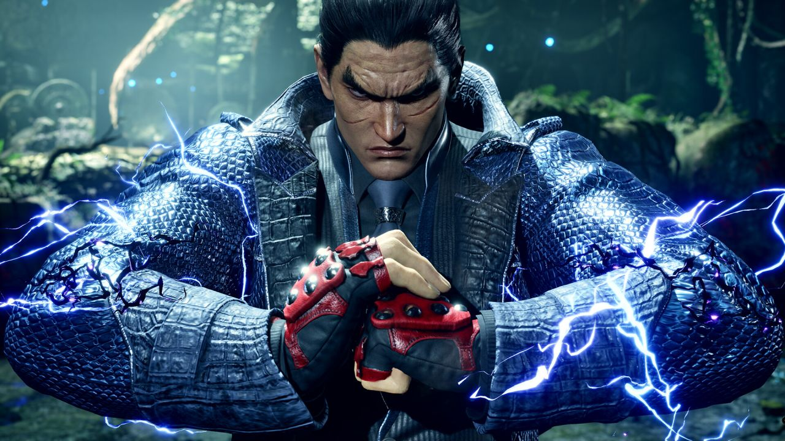
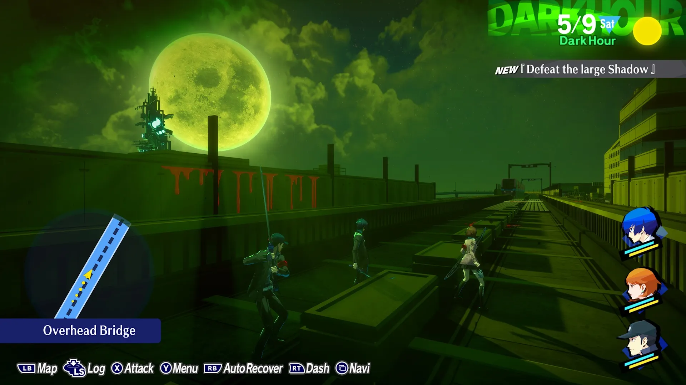
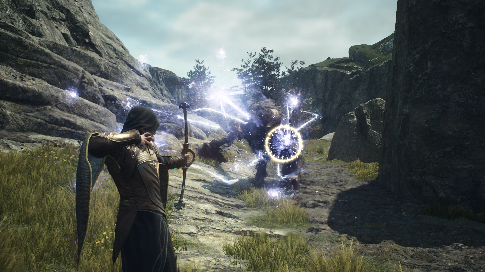
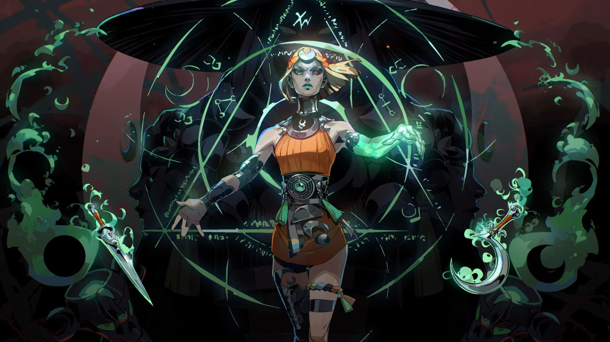
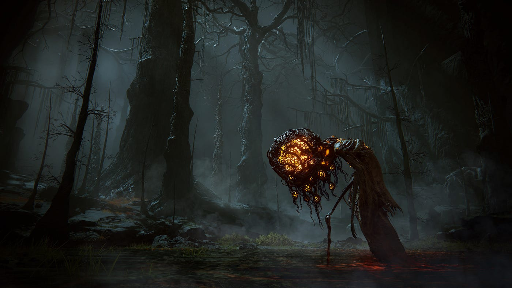
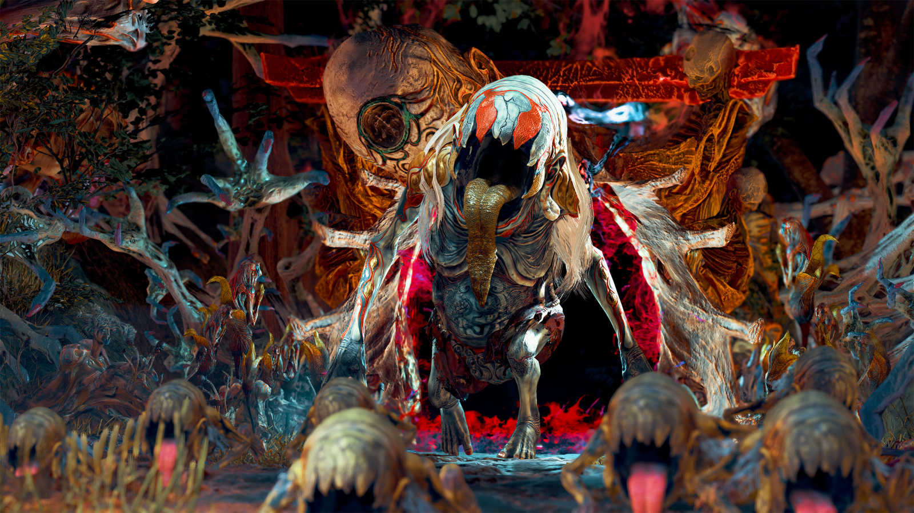
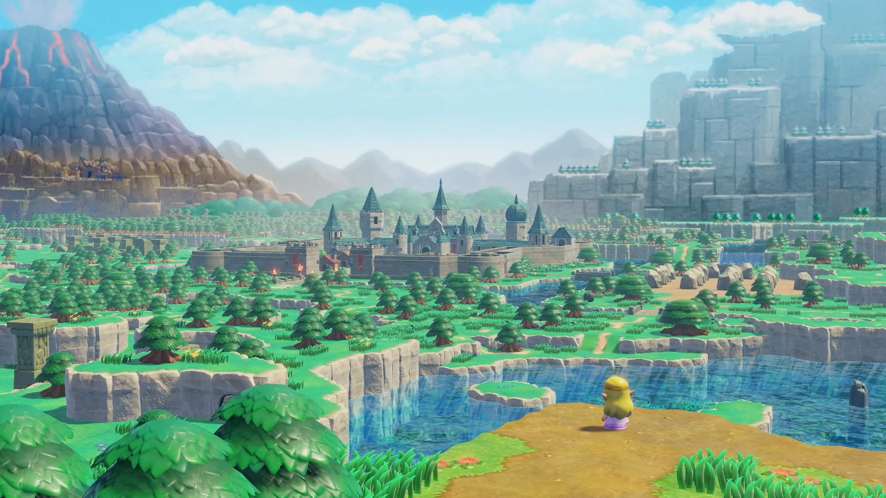
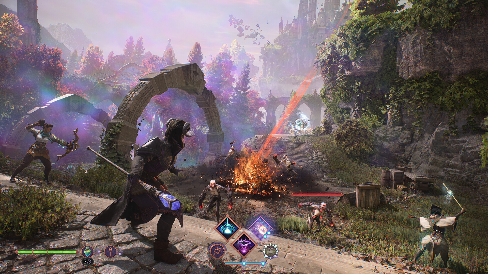
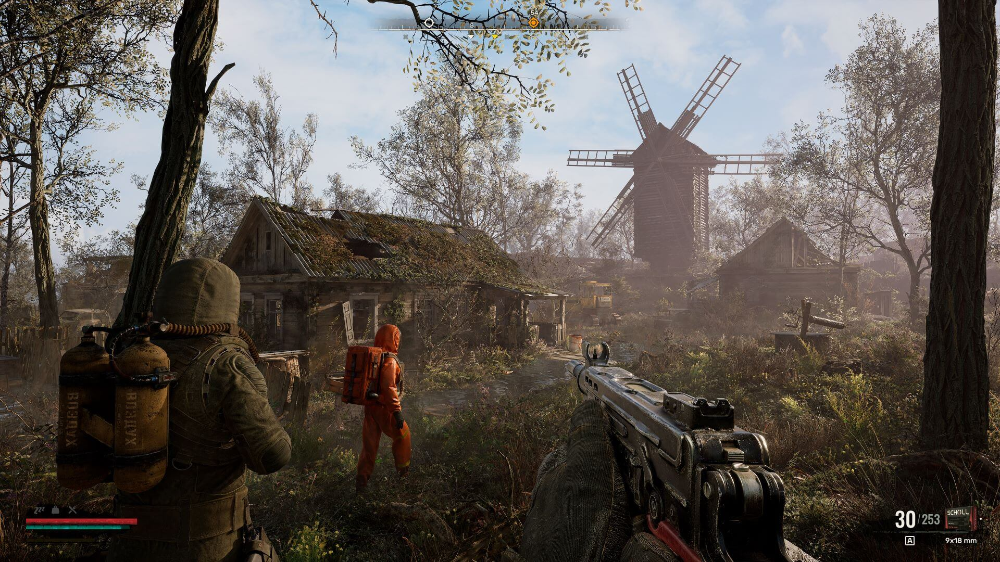
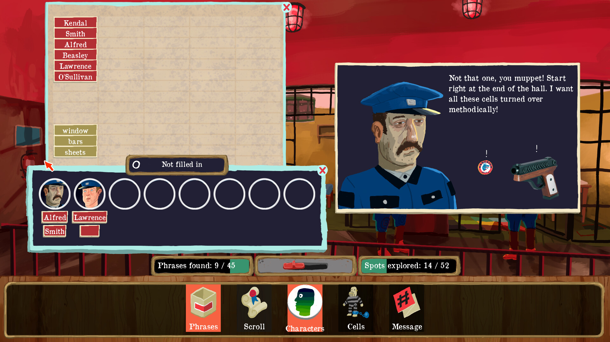

Video Game Release Calendar

Tekken 8 Bandai Namco
January:
- Bulletstorm VR (PC, PS5, Quest) — January 18
- Prince of Persia: The Lost Crown (PS5, PS4, Xbox Series X|S, Xbox One, PC) - January 18
- Another Code: Recollection (Switch) — January 19
- Palworld (PC, Xbox Series X|S) — January 19 (early access)
- The Last of Us Part 2: Remastered (PS5) - January 19
- Howl (PS5, Xbox Series X) — January 23
- Enshrouded (PC) — January 24 (early access)
- Apollo Justice: Ace Attorney Trilogy (PC, PS4, Switch, Xbox One) — January 25
- Under-Night In-Birth 2 Sys:Celes (PS4, PS5, Switch, PC) — January 25
- Like a Dragon: Infinite Wealth (PS5, PS4, Xbox Series X|S, Xbox One, PC) - January 26
- Tekken 8 (PC, PS5, Xbox Series X) — January 26

Persona 3 Reload Atlus
February:
- Granblue Fantasy: Relink (PC, PS4, PS5) — February 1
- Jujutsu Kaisen: Cursed Clash (PS4, PS5, Switch, Xbox One, Xbox Series X, PC) — February 2
- Persona 3 Reload (PC, PS4, PS5, Xbox One, Xbox Series X) — February 2
- Suicide Squad: Kill the Justice League (PC, PS5, Xbox Series X) — February 2
- Foamstars (PS4, PS5) — February 6
- Helldivers 2 (PC, PS5) — February 8
- Banishers: Ghosts of New Eden (PS5, Xbox Series X|S, PC) - February 13
- Ultros (Mac, PC, PS4, PS5) — February 13
- Tomb Raider 1-3 Remastered Starring Lara Croft (PC, PS4, PS5, Switch, Xbox One, Xbox Series X) — February 14
- A Little to the Left (PS4, PS5, Xbox One, Xbox Series X) — February 15
- Mario vs. Donkey Kong (Switch) — February 16
- Skull & Bones (PC, PS5, Xbox Series X) — February 16
- Bandle Tale: A League of Legends Story (PC, Switch) — February 19
- Balatro (PC, PS4, PS5, Switch, Xbox Series X) — February 20
- Nightingale (PC early access) - February 20
- Penny's Big Breakaway (PC, PS5, Switch, Xbox Series X) — February 21
- Terminator: Dark Fate - Defiance (PC) — February 21
- King Arthur: Knight's Tale (PS5, Xbox One, Xbox Series X) — February 22
- Open Roads (PC, PS4, PS5, Switch, Xbox One, Xbox Series X) — February 22
- Pacific Drive (PS5, PC) - February 22
- Pentiment (Switch) — February 22
- Sons of the Forest (PC) — February 23
- Shiren the Wanderer: The Mystery Dungeon of Serpentcoil Island (Switch) — February 27
- Brothers: A Tale Of Two Sons Remake (PS5, Xbox Series X|S, PC) - February 28
- Star Wars: Dark Forces Remaster (PC, PS4, PS5, Switch, Xbox One, Xbox Series X) — February 28
- Final Fantasy 7 Rebirth (PS5) — February 29
- Heavenly Bodies (Switch) — February 29

Dragons Dogma 2 Capcom
March:
- Ufouria: The Saga 2 (PC, PS5, Switch, Xbox Series X) — March 1
- The Thaumaturge (PC) - March 4
- The Outlast Trials (PC, PS4, PS5, Xbox One, Xbox Series X) — March 5
- Snufkin: Melody of Moominvalley (PC, Switch) — March 7
- Unicorn Overlord (PS5, PS4, Xbox Series X|S, Switch) - March 8
- WWE 2K24 (PC, PS4, PS5, Xbox One, Xbox Series X) — March 8
- Contra: Operation Galuga (PC, PS4, PS5, Switch, Xbox One, Xbox Series X) — March 12
- Llamasoft: The Jeff Minter Story (PC, PS4, PS5, Switch, Xbox One, Xbox Series X) — March 13
- Star Wars: Battlefront Classic Collection (PC, PS4, PS5, Switch, Xbox One, Xbox Series X)— March 14
- Outcast - A New Beginning (PC, PS5, Xbox Series X) — March 15
- Hi-Fi Rush (PS5) — March 19
- Lightyear Frontier (PC, Xbox Series X) — March 19 (early access)
- Alone in the Dark (PS5, Xbox Series X|C, PC) - March 20
- Final Fantasy 14 Online (Xbox Series X) — March 21
- Horizon Forbidden West (PC) — March 21
- Dragon's Dogma 2 (PS5, Xbox Series X|S, PC) - March 22
- Princess Peach: Showtime (Switch) - March 22
- Rise of the Ronin (PS5) - March 22
- Bulwark: Falconeer Chronicles (PC, PS4, PS5, Xbox One, Xbox Series X) — March 26
- Planet Zoo: Console Edition (PS5, Xbox Series X) — March 26
- South Park: Snow Day (PC, PS5, Switch, Xbox Series X) — March 26
- Felix the Cat Collection (PS4, PS5, Switch) — March 28
- Pepper Grinder (Switch, PC) - March 28
 Stellar Blade
Stellar Blade
April:
- Children of the Sun (PC) - April 9
- Gigantic: Rampage Edition (PC, PS4, PS5, Xbox One, Xbox Series X) — April 9
- Freedom Planet 2 (PS4, PS5, Switch, Xbox One, Xbox Series X) — April 14
- Grounded (Switch) — April 16
- Harold Halibut (PC, PS5, Xbox Series X) — April 16
- Phantom Fury (PC) - April 23
- Tales of Kenzera: Zau (PC, PS5, Switch, Xbox Series X) — April 23
- Another Crab's Treasure (PC, PS5, Switch, Xbox Series X, Gamepass) — April 25
- SaGa Emerald Beyond (Android, iOS, PC, PS4, PS5, Switch) — April 25
- Demon Slayer -Kimetsu no Yaiba- Sweep the Board! (Switch) — April 26
- Manor Lords (PC) — April 26
- Sand Land (PS5, PS4, Xbox Series X|S, PC) - April 26
- Stellar Blade (PS5) - April 26
- Sea of Thieves (PS5) — April 30

Hades 2 Supergiant Games
May:
- Endless Ocean Luminous (Switch) — May 2
- Hades 2 (PC early access) - May 6
- Prison Architect 2 (PC, PS5, Xbox Series X) — May 7
- Indika (PC, PS5, Xbox Series X) — May 8
- Animal Well (PS5, Switch, PC) — May 9
- Cryptmaster (PC) - May 9
- Crow Country (PS5, PC) - May 9
- Little Kitty, Big City (PC, Switch, Xbox One, Xbox Series X) — May 9
- Homeworld 3 (PC) — May 13
- Dread Delusion (PC) - May 14
- Braid, Anniversary Edition (Android, iOS, PC, PS4, PS5, Switch, Xbox One, Xbox Series X) — May 15
- Mullet MadJack (PC) - May 15
- Ghost of Tsushima Director's Cut (PC) — May 16
- Lorelai and the Laser Eyes (Switch, PC) - May 16
- Paper Trail (Android, iOS, PC, PS4, PS5, Switch, Xbox One, Xbox Series X) — May 21
- Senua's Saga: Hellblade 2 (PC, Xbox Series X) — May 21
- Paper Mario: The Thousand-Year Door (Switch) - May 23
- Duck Detective: The Secret Salami (PC) - May 23
- Wizardry: Proving Grounds of the Mad Overlord (PC, Switch, Xbox, PlayStation) - May 23
- The Rogue Prince of Persia (PC) — May 14 (early access)
- MultiVersus (PC, PS4, PS5, Xbox One, Xbox Series X) — May 28
- Nine Sols (PC, PS4, PS5, Switch) — May 29

Elden Ring: Shadow of the Erdtree From Software
June:
- Destiny 2: The Final Shape (PS5, PS4, Xbox Series X|S, Xbox One, PC) - June 4
- Killer Klowns From Outer Space: The Game (PC, PS4, PS5, Xbox One, Xbox Series X) — June 4
- Rocket Knight Adventures: Re-Sparked Collection (PS4, PS5, Switch) — June 11
- V Rising (PS5) — June 11
- Monster Hunter Stories (PC, PS4, Switch) — June 14
- Monster Hunter Stories 2: Wings of Ruin (PS4) — June 14
- Blud (PS4, Xbox One, Switch, PC) - June 18
- METAL SLUG ATTACK RELOADED (Switch) - June 18
- Still Wakes the Deep (PC, PS5, Xbox Series X, Gamepass) — June 18
- Moonstone Island (Switch) — June 19
- Elden Ring: Shadow of the Erdtree (PS5, PS4, Xbox Series X|S, Xbox One, PC) - June 21
- Shin Megami Tensei V: Vengeance (PC, PS4, PS5, Switch, Xbox One, Xbox Series X) — June 21
- Riven remake (PC, Quest) — June 25
- Super Monkey Ball Banana Rumble (Switch) — June 25
- Luigi's Mansion 2 HD (Switch) — June 27
- NeoSprint (PC, PS4, PS5, Switch, Xbox Series X) - June 27
- Spy x Anya: Operation Memories (PC, PS4, PS5, Switch) — June 28

Kunitsu-Gami:Path of the Goddess Capcom
July:
- Final Fantasy 14: Dawntrail (PC, PS4, PS5, Xbox Series X) — July 2
- The First Descendant (PS5, PS4, Xbox Series X|S, Xbox One, PC) - July 2
- Zenless Zone Zero (Android, iOS, PC, PS5) — July 4
- The Legend of Heroes: Trails Through Daybreak (PC, PS4, PS5, Switch) — July 5
- Once Human (PC) — July 9
- Ace Combat 7: Skies Unknown (Switch) — July 11
- Anger Foot (PC) - July 11
- Neon White (Xbox One, Xbox Series X, Gamepass) — July 11
- Darkest Dungeon 2 (PS4, PS5) — July 15
- Aerial_Knight's We Never Yield (PC, PS4, PS5, Xbox One, Xbox Series X) — July 16
- Cataclismo (PC) — July 16
- Deliver Us The Moon (Switch) - July 16
- Demon Slayer -Kimetsu no Yaiba- Sweep the Board! (PC, PS4, PS5, Xbox One, Xbox Series X)— July 16
- EvilVEvil (PS5, Xbox Series X|S, PC) - July 16
- Flock (PlayStation 5, Xbox Series X/S, PlayStation 4, Xbox One, PC, Gamepass) - July 16
- Gestalt: Steam & Cinder (PC) — July 16
- Nobody Wants to Die (PS5, Xbox Series X|S, PC) - July 17
- Teenage Mutant Ninja Turtles: Splintered Fate (Switch) — July 17
- Bō: Path of the Teal Lotus (PC, PS5, Switch, Xbox Series X) — July 18
- Dungeons of Hinterberg (Xbox Series X|S, PC, Gamepass) - July 18
- Flintlock: The Siege of Dawn (PS5, Xbox Series X|S, Xbox One, PC, Gamepass) - July 18
- Nintendo World Championships: NES Edition (Switch) - July 18
- Schim (PC, PS4, PS5, Switch, Xbox One) — July 18
- EA Sports College Football 25 (PS5, Xbox Series X) — July 19
- Kunitsu-Gami: Path of the Goddess (PC, PS4, PS5, Xbox One, Xbox Series X, Gamepass) — July 19
- F1 Manager 2024 (PC, PS4, PS5, Xbox One, Xbox Series X) — July 23
- Valley Peaks (PC) — July 24
- Arranger: A Role-Puzzling Adventure (Mac, PC, PS5, Switch) — July 25
- Earth Defense Force 6 (PC, PS4, PS5) — July 25
- The Star Named EOS (PC, PS5, Switch, Xbox Series X) — July 25
- Thrasher (PC VR, Quest) — July 25
- One Piece Odyssey (Switch) — July 26
- Valorant (PS5, Xbox Series X) - July 26
- The New Denpa Men (Switch) — July 27
 Thank Goodness You're Here!
Thank Goodness You're Here!
August:
- Star Wars: Bounty Hunter remaster (PC, PS4, PS5, Switch, Xbox One, Xbox Series X) — August 1
- Thank Goodness You're Here! (PC, PS5, Switch) — August 1
- Tomba! Special Edition (PC, Switch, PS5) — August 1
- World of Goo 2 (PC, Switch) — August 2
- Pepper Grinder (PS4, PS5, Xbox One, Xbox Series X) — August 6
- Creatures of Ava (PC, Xbox Series X, Gamepass) — August 7
- Cat Quest 3 (PS5, PS4, Xbox Series X|S, Xbox One, Switch, PC) - August 8
- SteamWorld Heist 2 (PC, PS4, PS5, Switch, Xbox One, Xbox Series X) — August 8
- The Crush House (PC) — August 9
- Stormgate (PC) — August 13 (early access)
- Hunt: Showdown (PS5, Xbox Series X) — August 15
- Madden NFL 25 (PC, PS5, Xbox Series X) — August 16
- Black Myth: Wukong (PS5, PC) - August 20
- Dustborn (PC, PS4, PS5, Xbox One, Xbox Series X) — August 20
- Tactical Breach Wizards (PC) — August 22
- Concord (PC, PS5) — August 23
- Endzone 2 (PC) — August 26 (early access)
- World of Warcraft: The War Within (Mac, PC) — August 26
- Core Keeper (PC, PS4, PS5, Switch, Xbox One, Xbox Series X) — August 27
- Akimbot (PC) - August 29
- Emio - The Smiling Man: Famicom Detective Club (Switch) — August 29
- Gundam Breaker 4 (PC, PS4, PS5, Switch) — August 29
- Shadow of the Ninja — Reborn (PC, PS4, PS5, Switch, Xbox Series X) — August 29
- Squirrel With A Gun (PC) - August 29
- Visions of Mana (PS5, PS4, Xbox Series X|S, Xbox One, PC) - August 29
- Star Wars Outlaws (PS5, Xbox Series X|S, PC) - August 30

The Legend of Zelda: Echos of Wisdom Nintendo
September:
- Parcel Corps (PS5, Xbox Series X|S, PC) - September 3
- Prison Architect 2 (PC, PS5, Xbox Series X) — September 3
- The Casting of Frank Stone (PC, PS5, Xbox Series X) — September. 3
- Age of Mythology: Retold (PC, Xbox Series X) — September 4
- Ace Attorney Investigations Collection (PC, PS4, Switch, Xbox One) — September 6
- Astro Bot (PS5) - September 6
- NBA 2K25 (PC, PS4, PS5, Switch, Xbox One, Xbox Series X) — September 6
- Warhammer 40,000: Space Marine 2 (PC, PS5, Xbox Series X) — September 9
- What The Car? (PC) - September 9
- I Am Your Beast (PC) - September 10
- The Elder Scrolls: Castles (Android, iOS) — September 10
- Towerborne - September 10
- Yars Rising (PC, PS4, PS5, Switch, Xbox One, Xbox Series X) — September 10
- Caravan SandWitch (PC, PS5, Switch) — September 12
- Test Drive Unlimited Solar Crown (PC, PS5, Xbox Series X) — September 12
- Wild Bastards (PC, PS5, Switch, Xbox Series X) — September 12
- Demonschool (PC, PS4, PS5, Switch, Xbox One, Xbox Series X) — September 13
- Funko Fusion (PC, PS5, Xbox Series X) — September 13
- The Plucky Squire (PC, PS5, Switch, Xbox Series X) — September 17
- UFO 50 (PC) - September 18
- God of War Ragnarök (PC) — September 19
- Dead Rising Deluxe Remaster (PC, PS5, Xbox Series X) — September 19
- Frostpunk 2 (PC) — September 20
- The Karate Kid: Street Rumble (PC, PS4, PS5, Switch, Xbox One, Xbox Series X) — September 20
- Harry Potter: Quidditch Champions (PC, PS4, PS5, Switch, Xbox One, Xbox Series X) — September 23
- Ara: History Untold (PC) — September 24
- Disney Epic Mickey: Rebrushed (PS4, PS5, Switch, Xbox One, Xbox Series X) — September 24
- GreedFall 2: The Dying World (PC) — September 24 (early access)
- Lollipop Chainsaw RePOP (PlayStation 5, Xbox Series X/S, Switch, PC) - September 25
- Earth Defense Force: World Brothers 2 (PS4, PS5, Switch) — September 26
- The Legend of Zelda: Echoes of Wisdom (Switch) - September 26
- Reynatis (PC, PS4, PS5, Switch) — September 29
- Starfield Shattered Space (PC, Xbox Series X|S)- September 30

Dragon Age: The Veilguard Bioware/EA
October:
- MechWarrior 5: Clans (PC, PS5, Xbox Series X) — October 3
- Sword Art Online Fractured Daydream (PC, PS4, PS5, Switch, Xbox Series X) — October 4
- Until Dawn (PC, PS5) — October 4
- Diablo 4: Vessel of Hatred (PC, PS4, PS5, Xbox One, Xbox Series X) — October 8
- Silent Hill 2 Remake (PS5, PC) - October 8
- Fantasy Life i: The Girl Who Steals Time (Switch) — October 10
- Dragon Ball: Sparking! Zero (PC, PS5, Xbox Series X) — October 11
- Metaphor: ReFantazio (PS5, PS4, Xbox Series X|S, PC) - October 11
- Starship Troopers: Extermination (PC, PS5, Xbox Series X) — October 11
- Transformers: Galactic Trials (PC, PS4, PS5, Switch, Xbox One, Xbox Series X) — October 11
- Undisputed (PC, PS5, Xbox Series X) — October 11
- A Quiet Place: The Road Ahead (PC, PS5, Xbox Series X) — October 17
- Super Mario Party Jamboree (Switch) - October 17
- Teenage Mutant Ninja Turtles: Mutants Unleashed (PC, PS4, PS5, Switch, Xbox One, Xbox Series X) — October 18
- Unknown 9: Awakening (PC, PS4, PS5, Xbox One, Xbox Series X) — October 18
- Lynked: Banner of the Spark - October 22
- Romancing SaGa 2: Revenge of the Seven (PC, PS4, PS5, Switch) — October 24
- Terminator: Survivors (PC) — October 24 (early access)
- Call of Duty: Black Ops 6 (PC, PS4, PS5, Xbox One, Xbox Series X) — October 25
- Sonic X Shadow Generations (PC, PS4, PS5, Switch, Xbox One, Xbox Series X) — October 25
- Life Is Strange: Double Exposure (PC, PS5, Xbox Series X) — October 29
- Dragon Age: The Veilguard (PS5, Xbox Series X|S, PC) - October 31
- Batman Arkham Shadow (Quest) - October 2024

Stalker 2: Heart of Chernobyl
November:
- Farmagia (Switch) — November 1
- Empire of the Ants (PC, PS5, Xbox Series X) — November 7
- Mario & Luigi Brothership (Switch) - November 7
- Slitterhead (PS5, PS4, Xbox Series X|S, PC) - November 8
- Antonblast (PC, Switch) — November 12
- Dragon Quest 3 HD-2D Remake (PC, PS5, Switch, Xbox Series X) — November 14
- Assassin's Creed Shadows (PS5, Xbox Series X|S, PC) - November 15
- Path of Exile 2 - November 15 (early access)
- Microsoft Flight Simulator 2024 (PC, Xbox Series X) — November 19
- Genshin Impact (Xbox Series X|S, Gamepass) - November 20
- Stalker 2: Heart of Chernobyl (Xbox Series X|S, PC) - November 20
Indiana Jones and The Great Circle Machine Games/Microsoft
December:
- Marvel Rivals - December 6
- Indiana Jones and The Great Circle (PC, Xbox Series X|S, Gamepass) - December 9
- Monument Valley 3 - December 10
- Alien: Rogue Incursion (PC VR, PSVR 2, Quest 3) - December 19

The Rise of the Golden Idol
2024:
- 33 Immortals (PC, Xbox Series X)
- Ark 2 (PC, Xbox Series X)
- Baby Steps (PC, PS5)
- Batman: Arkham Shadow (Quest)
- Blade Chimera (PC, Switch)
- Blue Protocol (PC, PS5, Xbox Series X)
- Cities: Skylines 2 (PS5, Xbox Series X)
- Clock Tower: Rewind (PlayStation 5, Xbox Series X/S, PlayStation 4, Xbox One, Switch, PC)
- Death Trick: Double Blind (Switch)
- Ender Magnolia: Bloom in the mist (Switch)
- Europa (PC, Switch)
- Fantasian Neo Dimension (PC, PS4, PS5, Switch, Xbox Series X)
- Fear the Spotlight (PlayStation 5, Xbox Series X/S, PlayStation 4, Xbox One, Switch, PC)
- Ghost Bike (PC, PS4, PS5, Xbox One, Xbox Series X)
- Hotel Barcelona (Xbox Series X)
- Hunter x Hunter: Nen x Impact (PC, PS5, Switch)
- John Carpenter's Toxic Commando (PC, PS5, Xbox Series X)
- Kill Knight (PlayStation 5, Xbox Series X/S, Switch, PC)
- Kingdom Hearts Missing-Link (Android, iOS)
- Kingmakers (PC)
- Lego Horizon Adventures (PC, PS5, Switch)
- Looney Tunes: Wacky World of Sports (Switch)
- Marvel vs. Capcom Fighting Collection: Arcade Classics (PlayStation 4, Switch, PC)
- Menace (PC)
- Metal Gear Solid Delta: Snake Eater (PC, PS5, Xbox Series X)
- Metal Slug Tactics (PlayStation 5, Xbox Series X/S, PlayStation 4, Xbox One, Switch, PC)
- Mighty Morphin Power Rangers: Rita's Rewind (PlayStation 5, Xbox Series X/S, PlayStation 4, Xbox One, Switch, PC)
- Neva (PlayStation 5, Xbox Series X/S, Switch, PC)
- On Your Tail (PC, Switch)
- Planet Coaster 2 (PC, PS5, Xbox Series X) — fall 2024
- Pokémon Trading Card Game Pocket (Android, iOS)
- Predator: Hunting Grounds (PS5, Xbox Series X)
- Rift of the Necrodancer (PC, Switch)
- Rivals 2 (PC)
- Shadows of the Damned: Hella Remastered (PlayStation 5, Xbox Series X/S, PlayStation 4, Xbox One, Switch, PC)
- Skate Story (PC)
- Slay the Princess: The Pristine Cut (PC, PS4, PS5, Switch, Xbox One, Xbox Series X)
- Squirrel With A Gun (PlayStation 5, Xbox Series X/S)
- Suikoden 1 & 2 HD Remaster: Gate Run and Dunan Unification Wars (PS4, Xbox One, Switch, PC)
- Tales of the Shire (PC, PS5, Switch, Xbox Series X)
- Temtem: Swarm (consoles TBA, PC) — Q3 2024
- The Alters (PC, PS5, Xbox Series X)
- The Gecko Gods (PC, PS4, PS5, Switch)
- The Rise of the Golden Idol (Android, iOS, PC, PS4, PS5, Switch, Xbox One, Xbox Series X)
- The Thing: Remastered (PlayStation 5, Xbox Series X/S, PlayStation 4, Xbox One, Switch, PC)
- The Wolf Among Us 2 (PC, PS4, PS5, Xbox One, Xbox Series X)
- Time Flies (PC, PS5, Switch)
- Towers of Aghasba (PC, PS5)
- Toxic Crusaders (PC, PS4, PS5, Switch, Xbox One, Xbox Series X)
- Urban Myth Dissolution Center (PC, Switch)
- Windblown (PC)
- Witchfire (PC)
- Wanderstop (PlayStation 5, PC)
- Ys X: Nordics (PC, PS4, PS5, Switch)
- Zoochosis (PC)